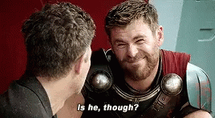

Obviously the one and only Hulk, Bruce Banner, for those more scientifically inclined, is the best Avenger. He's green, there is no contest. With not one, not two, not three, not four, not five, not six, but . . .
SEVEN PHDs
I say, what a absolute guy. Science Bros are forever bros. And Hulk can smash things and is really strong so that makes him like "the strongest avenger" or something. We all know it's because he is a lovely shade of green. Can be no other reason. absolutely the best.
In conclusion, Hulk is the best and strongest Avenger
Please note that these are funny haha opinions, not real opinion. I mean come on Hulk is really great and he's green which ups his status by like at lest 64%, but obvi Cap is the best Avenger. And Wanda Maximoff is the strongest, no i will not being taking questions at this time.
Don't tell anyone though it'll ruin the nice running joke I'm setting up.